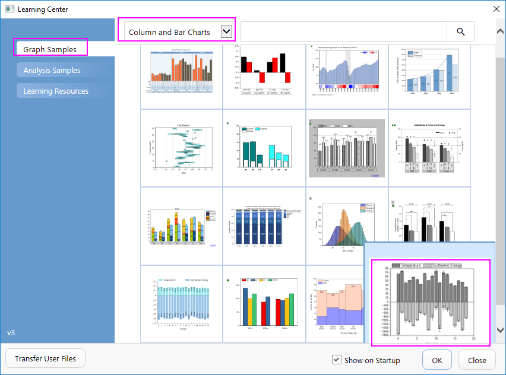
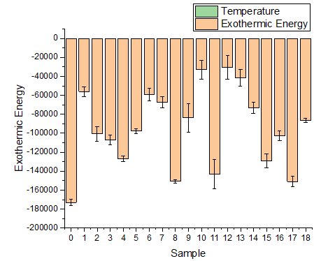
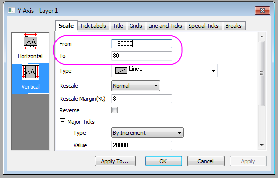
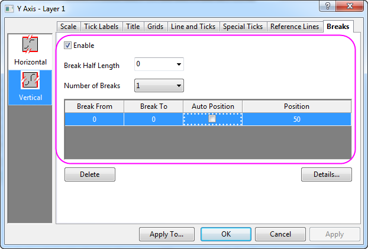
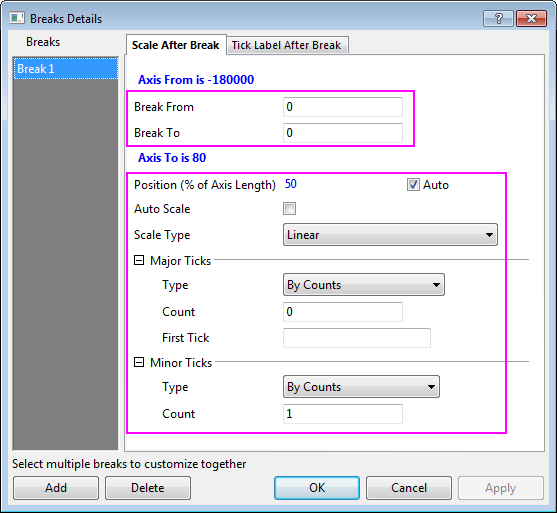
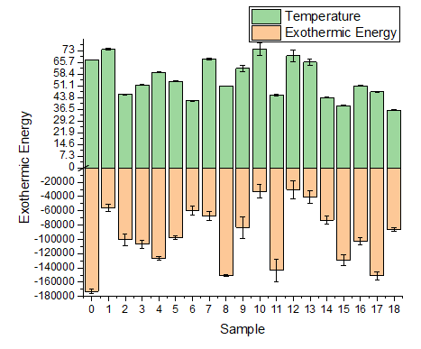
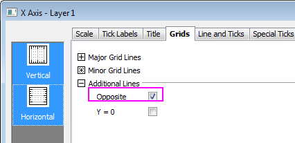
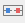
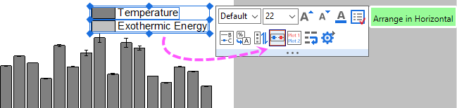

Gestapeltes Säulendiagramm mit unterschiedlichen Skalierungen für positive und negative Y-Werte
stack-column-custom-Y-scales
Zusammenfassung
Sie werden sehen, wie Sie eine Achsenunterbrechung ohne Lücke verwenden können, um dieses Diagramm zu erstellen, das einen viel größeren Y-Skalierungsbereich für die negativen Balken hat.

Origin-Version mind. erforderlich: 2015 SR0
Was Sie lernen werden
Dieses Tutorial zeigt Ihnen, wie Sie:
- ein gestapeltes Säulendiagramm mit Fehlerbalken erstellen,
- eine Achsenunterbrechung ohne Lücke aktivieren,
- eine Achse in mehrere Segmente einteilen und Skalierungen getrennt festlegen.
Achsenunterbrechungen ohne Lücke hinzufügen
- Wählen Sie im Menü Hilfe: Lernzentrum oder drücken Sie die Taste F11, um das Lernzentrum zu öffnen. Wählen Sie die Registerkarte Diagrammbeispiel und wählen Sie dann Säulen- und Balkendiagramme in der Auswahlliste. Klicken Sie doppelt auf das Diagrammbeispiel unten, um das Beispiel "Column and Bar Charts - Zero Length Break to Change Axis Scale" zu öffnen.

Hinweis: Dieses Tutorial ist mit dem Ordner Custom Axis Scale to Show Different Scale des Projekts "Tutorial Data" verbunden: <Origin EXE Folder>\Samples\Tutorial Data.opj.
- Aktivieren Sie die Arbeitsmappe "Temperature & Exothermic Energy". Markieren Sie jetzt alle Spalten in Blatt 1 und wählen Sie dann Zeichnen: Einfache 2D: Gestapelte Säulen, um ein gestapeltes Säulendiagramm mit Fehlerbalken zu erstellen.
 - Positive Säulen sind nicht zu sehen, da ihre absoluten Werte zu klein für den Vergleich mit den negativen Säulen sind.
- Sie können die Achse bei Y=0 unterbrechen und verschiedene Achsenskalierungen für diese zwei Segmente verwenden. Klicken Sie zuerst doppelt auf die Y-Achse, um den Dialog Achsen zu öffnen, und legen Sie den Y-Bereich (bei ausgewähltem Symbol Vertikal) mit -180000 bis 80 fest.
 - Gehen Sie dann zur Registerkarte Unterbrechungen bei ausgewählten Symbol Vertikal und aktivieren Sie 1 Achsenunterbrechung: Setzen Sie zudem die halbe Länge der Unterbrechung auf 0, so dass die Kennzeichnung der Unterbrechung nicht gezeigt wird. Setzen Sie sowohl Unterbrechung von als auch Unterbrechung bis auf 0, so dass die Achse bei 0 unterbrochen und keine Unterbrechungslücke angezeigt wird. Deaktivieren Sie das Kontrollkästchen Autom. Position und geben Sie 50 für die Zelle Position ein.
 - Legen Sie die benutzerdefinierte Skalierung für den Bereich nach der Unterbrechung (Y>0) fest, indem Sie auf Details klicken:
 - Klicken Sie auf Anwenden, um die Einstellungen anzuwenden und das aktualisierte Diagramm anzuzeigen. Sie können sehen, dass die Achsenskalierungen für die Bereiche über bzw. unter der Linie Y=0 unterschiedlich sind. Auch die Säulen für die positiven Werte können in dem Diagramm angezeigt werden.

Weitere Schritte der benutzerdefinierten Anpassung
Die folgenden Schritte können das Diagramm weiterführend benutzerdefiniert anpassen, um genau so auszusehen, wie das Bild unter Zusammenfassung.
- Legen Sie die Werte der X-Skalierung mit von -2 bis 20 und das Inkrement der großen Hilfsstriche mit 2 fest.
- Gehen Sie zur Registerkarte Gitternetze und wählen Sie beide Symbole Vertikal und Horizontal aus. Aktivieren Sie das Kontrollkästchen Gegenüber, so dass die Gitternetzlinien gegenüber der X- und Y-Achsen gezeigt werden.
 - Klicken Sie auf OK, um diese Einstellungen anzuwenden und den Dialog Achsen zu schließen.
- Um die positive und negative Säulenfarbe in hellgrau und grau zu verwandeln, klicken Sie auf die Säulen in der Minisymbolleiste, gehen Sie zur Registerkarte Einzeln
 und klicken Sie auf die Schaltfläche Füllfarbe
und klicken Sie auf die Schaltfläche Füllfarbe  in der erwarten Farbauswahl. Setzen Sie die Farbe der positiven Säulen auf Grau.
in der erwarten Farbauswahl. Setzen Sie die Farbe der positiven Säulen auf Grau.

Klicken Sie auf die negativen Säulen, um die Farbe in Hellgrau zu ändern, wie oben gezeigt. - Um die Legende benutzerdefiniert anzupassen, klicken Sie auf das Legendenobjekt in der Minisymbolleiste und klicken Sie auf die Schaltfläche Horizontal anordnen , um zwei Legendeneinträge in der gleichen Zeile anzuordnen.

Sie erhalten dann die von Ihnen gewünschte endgültige Grafik.